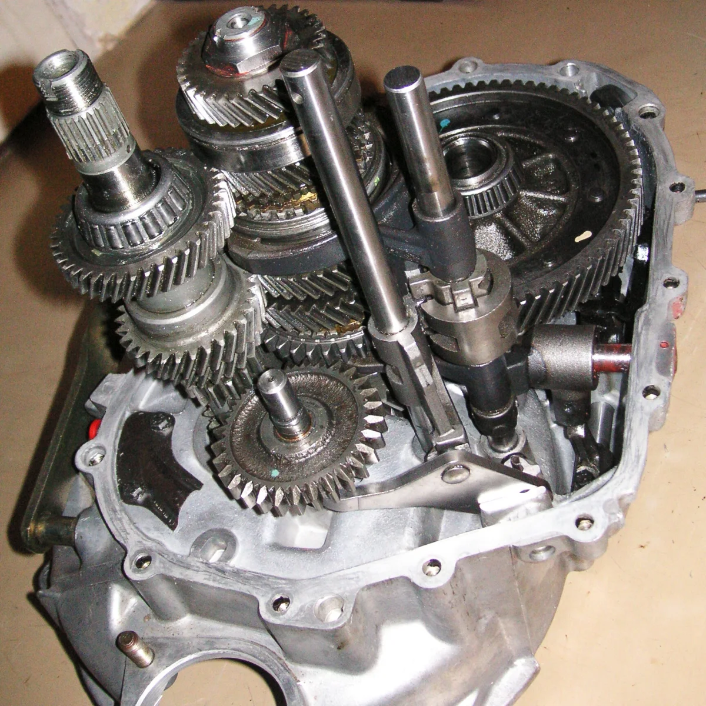
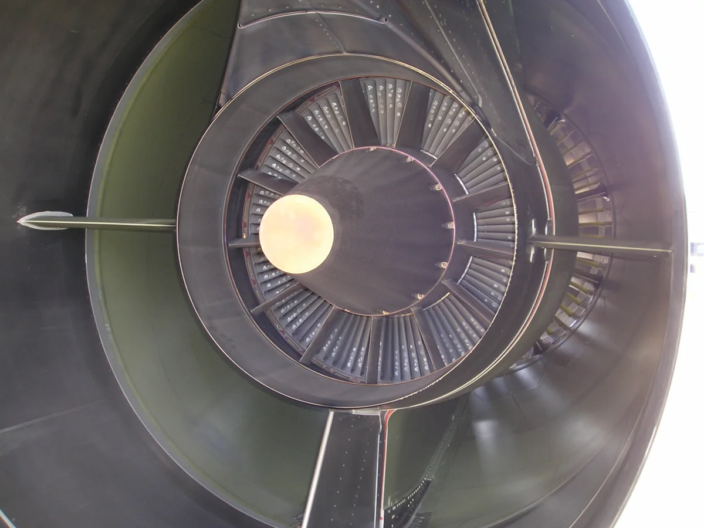

Automotive
Connect case depth and surface requirements to the atmosphere, temperature and records used on the production line.
- Case depth and hardness
- Carbon potential stability
Explore the components, process variables and control requirements that matter to your application.

Connect case depth and surface requirements to the atmosphere, temperature and records used on the production line.

Start with the customer specification and translate its measurement, recording and review requirements into a documented workflow.

Compare deep case carburizing and controlled nitriding against the material, target case and allowable distortion.

Match the atmosphere supply and thermal cycle to the material, furnace and required surface condition.

Define the temperature profile, process atmosphere, cleanliness and lot records before assessing control-system integration.
Share your material, furnace type and target result with a Gauss engineer.